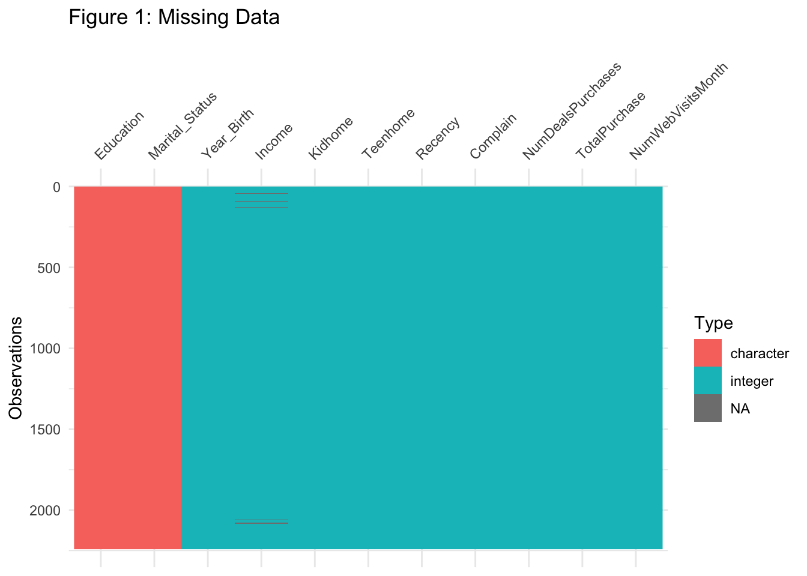

Code
Michelle Dai
2022-05-06
Appendix: Data Details
Source of data: https://www.kaggle.com/datasets/imakash3011/customer-personality-analysis?select=marketing_campaign.csv
ID: Customer’s unique identifier
Year_Birth: Customer’s birth year
Education: Customer’s education level
Marital_Status: Customer’s marital status
Income: Customer’s yearly household income
Kidhome: Number of children in customer’s household
Teenhome: Number of teenagers in customer’s household
Dt_Customer: Date of customer’s enrollment with the company
Recency: Number of days since customer’s last purchase
Complain: 1 if the customer complained in the last 2 years, 0 otherwise
MntWines: Amount spent on wine in last 2 years
MntFruits: Amount spent on fruits in last 2 years
MntMeatProducts: Amount spent on meat in last 2 years
MntFishProducts: Amount spent on fish in last 2 years
MntSweetProducts: Amount spent on sweets in last 2 years
MntGoldProds: Amount spent on gold in last 2 years
NumDealsPurchases: Number of purchases made with a discount
AcceptedCmp1: 1 if customer accepted the offer in the 1st campaign, 0 otherwise
AcceptedCmp2: 1 if customer accepted the offer in the 2nd campaign, 0 otherwise
AcceptedCmp3: 1 if customer accepted the offer in the 3rd campaign, 0 otherwise
AcceptedCmp4: 1 if customer accepted the offer in the 4th campaign, 0 otherwise
AcceptedCmp5: 1 if customer accepted the offer in the 5th campaign, 0 otherwise
Response: 1 if customer accepted the offer in the last campaign, 0 otherwise
NumWebPurchases: Number of purchases made through the company’s website
NumCatalogPurchases: Number of purchases made using a catalogue
NumStorePurchases: Number of purchases made directly in stores
NumWebVisitsMonth: Number of visits to company’s website in the last month
TotalPurchase is the sum of NumWebPurchases, NumCatalogPurchases, and NumStorePurchases.
References
Austin, Peter C. “An Introduction to Propensity Score Methods for Reducing the Effects of Confounding in Observational Studies.” Multivariate Behavioral Research, vol. 46, no. 3, 2011, pp. 399–424., https://doi.org/10.1080/00273171.2011.568786.
Malcolm Barrett, Lucy D’Agostino McGowan. “Causal Inference in R.” Causal Inference in R, 8 Mar. 2022, https://www.r-causal.org/.
Code
Data Description and Problem Identified
library(causaldata)
library(dbplyr)
library(ggdag)
library(tidyverse)
library(broom)
library(visdat)
data <- read.csv(file="marketing_campaign.csv")data$TotalPurchase <- data$NumWebPurchases+ data$NumCatalogPurchases+data$NumStorePurchases
data_sub <- data %>% select(Year_Birth, Education, Marital_Status, Income, Kidhome, Teenhome, Recency, Complain, NumDealsPurchases, TotalPurchase, NumWebVisitsMonth)purchase <- dagify(
NumWebVisitsMonth ~ Year_Birth + Education +Marital_Status+ Kidhome + Teenhome + Recency + NumDealsPurchases,
TotalPurchase ~ Marital_Status + Income + Kidhome + Teenhome + Recency + Complain + NumDealsPurchases,
exposure = "NumWebVisitsMonth",
outcome = "TotalPurchase",
labels = c(
NumWebVisitsMonth = "#Web Visit Last Month",
Year_Birth = "Birth Year",
Education = "Education",
Marital_Status = "Marital Status",
Kidhome = "#Kids at Home",
Teenhome = "#Teenagers at Home",
Recency = "#Days since Last Purchase",
NumDealsPurchases = "#Purchase using Discount",
Income = "Income",
TotalPurchase = "Total Purchase",
Complain = "Complain"
)
)
ggdag_status(purchase, use_labels = "label", text = FALSE) +
guides(fill = "none", color = "none")dagify(
NumWebVisitsMonth ~ Year_Birth + Education +Marital_Status+ Kidhome + Teenhome + Recency + NumDealsPurchases,
TotalPurchase ~ Marital_Status + Income + Kidhome + Teenhome + Recency + Complain + NumDealsPurchases,
exposure = "NumWebVisitsMonth",
outcome = "TotalPurchase",
labels = c(
NumWebVisitsMonth = "#Web Visit Last Month",
Year_Birth = "Birth Year",
Education = "Education",
Marital_Status = "Marital Status",
Kidhome = "#Kids at Home",
Teenhome = "#Teenagers at Home",
Recency = "#Days since Last Purchase",
NumDealsPurchases = "#Purchase using Discount",
Income = "Income",
TotalPurchase = "Total Purchase",
Complain = "Complain"
)
) %>%
ggdag_adjustment_set(text_col = "black")Missing Data Imputation
vis_dat(data_sub) + labs(title = "Figure 1: Missing Data")
library(mice)
library(MatchThem)
library(survey)
set.seed(1)lm(Recency~Income, data = data_sub) %>%
tidy()
data_sub_imp <- mice(data_sub, 5, "pmm", printFlag = FALSE)
data_sub_complete <- complete(data_sub_imp)
lm(Recency~Income, data = data_sub_complete) %>%
tidy()data_sub_complete <- data_sub_complete %>%
mutate(Education = ifelse(Education == "2n Cycle", 0, Education))%>%
mutate(Education = ifelse(Education == "Basic", 1, Education)) %>%
mutate(Education = ifelse(Education == "Graduation", 2, Education)) %>%
mutate(Education = ifelse(Education == "Master", 3, Education)) %>%
mutate(Education = ifelse(Education == "PhD", 4, Education)) %>%
mutate(Marital_Status = ifelse(Marital_Status == "Single", 0, Marital_Status)) %>%
mutate(Marital_Status = ifelse(Marital_Status == "Together", 1, Marital_Status))%>%
mutate(Marital_Status = ifelse(Marital_Status == "Married", 2, Marital_Status))%>%
mutate(Marital_Status = ifelse(Marital_Status == "Divorced", 3, Marital_Status))%>%
mutate(Marital_Status = ifelse(Marital_Status == "Widow", 4, Marital_Status))%>%
mutate(Marital_Status = ifelse(Marital_Status == "Alone", 5, Marital_Status))%>%
mutate(Marital_Status = ifelse(Marital_Status == "Absurd", 6, Marital_Status))%>%
mutate(Marital_Status = ifelse(Marital_Status == "YOLO", 7, Marital_Status))
data_continuous <- data_sub_complete
data_sub_complete <- data_sub_complete %>% mutate(NumWebVisitsMonth = ifelse(NumWebVisitsMonth>=6, 1, 0))Propensity Score Model
library(tidyverse)
library(dplyr)
library(broom)
library(smd)
library(gtsummary)
library(survey)
data_sub_complete %>%
tbl_summary(
by = NumWebVisitsMonth,
include = c(
"Year_Birth", "Education", "Marital_Status", "Kidhome", "Teenhome", "Recency", "NumDealsPurchases")) %>%
add_overall()Unweighted
data_sub_complete <-
glm(NumWebVisitsMonth ~ Year_Birth + as.factor(Education) +as.factor(Marital_Status)+ Kidhome + Teenhome + Recency + NumDealsPurchases,
data = data_sub_complete,
family = binomial()) %>%
augment(type.predict = "response",
data = data_sub_complete) # concatenation
data_sub_complete %>%
select(NumWebVisitsMonth, .fitted)ggplot(data_sub_complete, aes(x= .fitted, fill = as.factor(NumWebVisitsMonth))) +
geom_histogram(bins = 30) +geom_vline(xintercept = median(data_sub_complete[data_sub_complete$NumWebVisitsMonth == 0, ]$.fitted), linetype="twodash",
color = "red", size=1)+geom_vline(xintercept = median(data_sub_complete[data_sub_complete$NumWebVisitsMonth == 1, ]$.fitted), linetype="twodash",
color = "turquoise4", size=1)+
labs(x="Propensity Score", y="Count", title= "Figure 2: Distribution of Propensity Score before Weighting")#median(data_sub_complete[data_sub_complete$NumWebVisitsMonth == 0, ]$.fitted)
#median(data_sub_complete[data_sub_complete$NumWebVisitsMonth == 1, ]$.fitted)library(rsample)
library(PSW)
#fit inverse probablity weight model
fit_ipw <- function(split, ...) {
.df <- analysis(split)
# fit propensity score model
propensity_model <- glm(
NumWebVisitsMonth ~ Year_Birth + as.factor(Education) +as.factor(Marital_Status)+ Kidhome + Teenhome + Recency + NumDealsPurchases,
data = .df,
family = binomial()
)
# calculate inverse probability weights
.df <- propensity_model %>%
augment(type.predict = "response", data = .df)
# outcome model
lm(TotalPurchase ~ NumWebVisitsMonth, data = .df) %>%
tidy()
}
# fit ipw model to bootstrapped samples
ipw_results <- bootstraps(data_sub_complete, 1000, apparent = TRUE) %>%
mutate(results = map(splits, fit_ipw))# get t-statistic-based CIs
boot_estimate <- int_t(ipw_results, results) %>%
filter(term == c("(Intercept)", "NumWebVisitsMonth"))
boot_estimateATO Weighted
data_sub_complete <- glm(NumWebVisitsMonth ~ Year_Birth + as.factor(Education) +as.factor(Marital_Status)+ Kidhome + Teenhome + Recency + NumDealsPurchases,
data=data_sub_complete, family = binomial()) %>%
augment(data_sub_complete, type.predict = "response") %>%
mutate(wt_ato = (1 - NumWebVisitsMonth)* .fitted + NumWebVisitsMonth * (1 - .fitted))des <- svydesign(
ids = ~1,
data = data_sub_complete,
weight = ~ wt_ato
)
des %>%
tbl_svysummary(
by = NumWebVisitsMonth,
include = c(
"Year_Birth", "Education", "Marital_Status", "Kidhome", "Teenhome", "Recency", "NumDealsPurchases")) %>%
add_overall()for_plot <- data_sub_complete %>% distinct() %>%
pivot_wider(names_from = NumWebVisitsMonth,
values_from = .fitted,
names_prefix = "NumWebVisitsMonth_p")ggplot(for_plot) +
geom_histogram(bins = 50,
aes(x = NumWebVisitsMonth_p1,
weight = wt_ato),
fill = "cornflower blue") +
geom_histogram(bins = 50,
aes(x = NumWebVisitsMonth_p0,
weight = wt_ato,
y = - stat(count)),
fill = "orange") +
scale_y_continuous("Count", label = abs) +
scale_x_continuous("Propensity Score (ATO Weighted)") +
geom_label(
label = "Visit >= 6",
x = 0.1,
y = 10,
)+
geom_label(
label = "Visit < 6",
x = 0.1,
y = -10,
)+ labs(title= "Figure 3: Distribution of Propensity Score (ATO Weighted)")ecdf_1 <- data_sub_complete %>%
filter(NumWebVisitsMonth == 1) %>%
arrange(Income) %>%
mutate(cum_pct_ato = cumsum(wt_ato) / sum(wt_ato))
ecdf_0 <- data_sub_complete %>%
filter(NumWebVisitsMonth == 0) %>%
arrange(Income) %>%
mutate(cum_pct_ato = cumsum(wt_ato) / sum(wt_ato))ggplot(ecdf_1, aes(x = Income, y = cum_pct_ato, color = "Yes")) +
geom_line() +
geom_line(data = ecdf_0,
aes(x = Income, y = cum_pct_ato, color = "No")) + labs(x = "Income after ATO weighting", y = "(ATO Weighted) Percent <= x", title="Figure 4: ATO Weighted ECDF for Income", color = "NumWebVisitsMonth")
ecdf_1 <- data_sub_complete %>%
filter(NumWebVisitsMonth == 1) %>%
arrange(Year_Birth) %>%
mutate(cum_pct_ato = cumsum(wt_ato) / sum(wt_ato))
ecdf_0 <- data_sub_complete %>%
filter(NumWebVisitsMonth == 0) %>%
arrange(Year_Birth) %>%
mutate(cum_pct_ato = cumsum(wt_ato) / sum(wt_ato))ggplot(ecdf_1, aes(x = Year_Birth, y = cum_pct_ato, color = "Yes")) +
geom_line() +
geom_line(data = ecdf_0,
aes(x = Year_Birth, y = cum_pct_ato, color = "No")) + labs(x = "Year_Birth after ATO weighting", y = "(ATO Weighted) Percent <= x", title="Figure 5: ATO Weighted ECDF for Year_Birth", color = "NumWebVisitsMonth")ecdf_1 <- data_sub_complete %>%
filter(NumWebVisitsMonth == 1) %>%
arrange(Recency) %>%
mutate(cum_pct_ato = cumsum(wt_ato) / sum(wt_ato))
ecdf_0 <- data_sub_complete %>%
filter(NumWebVisitsMonth == 0) %>%
arrange(Recency) %>%
mutate(cum_pct_ato = cumsum(wt_ato) / sum(wt_ato))ggplot(ecdf_1, aes(x = Recency, y = cum_pct_ato, color = "Yes")) +
geom_line() +
geom_line(data = ecdf_0,
aes(x = Recency, y = cum_pct_ato, color = "No")) + labs(x = "Recency after ATO weighting", y = "(ATO Weighted) Percent <= x", title="Figure 6: ATO Weighted ECDF for Recency", color = "NumWebVisitsMonth")ecdf_1 <- data_sub_complete %>%
filter(NumWebVisitsMonth == 1) %>%
arrange(Kidhome) %>%
mutate(cum_pct_ato = cumsum(wt_ato) / sum(wt_ato))
ecdf_0 <- data_sub_complete %>%
filter(NumWebVisitsMonth == 0) %>%
arrange(Kidhome) %>%
mutate(cum_pct_ato = cumsum(wt_ato) / sum(wt_ato))ggplot(ecdf_1, aes(x = Kidhome, y = cum_pct_ato, color = "Yes")) +
geom_line() +
geom_line(data = ecdf_0,
aes(x = Kidhome, y = cum_pct_ato, color = "No")) + labs(x = "Kidhome after ATO weighting", y = "(ATO Weighted) Percent <= x", title="Figure 7: ATO Weighted ECDF for Kidhome", color = "NumWebVisitsMonth")
ecdf_1 <- data_sub_complete %>%
filter(NumWebVisitsMonth == 1) %>%
arrange(Teenhome) %>%
mutate(cum_pct_ato = cumsum(wt_ato) / sum(wt_ato))
ecdf_0 <- data_sub_complete %>%
filter(NumWebVisitsMonth == 0) %>%
arrange(Teenhome) %>%
mutate(cum_pct_ato = cumsum(wt_ato) / sum(wt_ato))ggplot(ecdf_1, aes(x = Teenhome, y = cum_pct_ato, color = "Yes")) +
geom_line() +
geom_line(data = ecdf_0,
aes(x = Teenhome, y = cum_pct_ato, color = "No")) + labs(x = "Teenhome after ATO weighting", y = "(ATO Weighted) Percent <= x", title="Figure 8: ATO Weighted ECDF for Teenhome", color = "NumWebVisitsMonth")
ecdf_1 <- data_sub_complete %>%
filter(NumWebVisitsMonth == 1) %>%
arrange(NumDealsPurchases) %>%
mutate(cum_pct_ato = cumsum(wt_ato) / sum(wt_ato))
ecdf_0 <- data_sub_complete %>%
filter(NumWebVisitsMonth == 0) %>%
arrange(NumDealsPurchases) %>%
mutate(cum_pct_ato = cumsum(wt_ato) / sum(wt_ato))ggplot(ecdf_1, aes(x = NumDealsPurchases, y = cum_pct_ato, color = "Yes")) +
geom_line() +
geom_line(data = ecdf_0,
aes(x = NumDealsPurchases, y = cum_pct_ato, color = "No")) + labs(x = "NumDealsPurchases after ATO weighting", y = "(ATO Weighted) Percent <= x", title="Figure 9: ATO Weighted ECDF for NumDealsPurchases", color = "NumWebVisitsMonth")smds <- data_sub_complete %>%
summarise(
across(
c("Year_Birth", "Education", "Kidhome", "Teenhome", "Recency", "NumDealsPurchases"),
list(
unweighted = ~smd(.x, NumWebVisitsMonth)$estimate,
ato.weighted = ~smd(.x, NumWebVisitsMonth, w = wt_ato)$estimate
)
)
)
smds %>%
pivot_longer(
everything(),
values_to = "SMD",
names_to = c("variable", "Method"),
names_pattern = "(.*)_(.*)") %>%
arrange(desc(Method), abs(SMD)) %>%
mutate(variable = fct_inorder(variable)) -> for_plotggplot(for_plot, aes(x = abs(SMD), y=variable, group = Method, color= Method))+ labs(x = "Standarized Mean Difference", y="Variables", title = "Figure 10: Love Plot") +
geom_line(orientation = "y") +
geom_point() +
geom_vline(xintercept = 0.1, lty = 2, color = "black", size =0.1)
library(rsample)
library(PSW)
#fit inverse probablity weight model
fit_ipw <- function(split, ...) {
.df <- analysis(split)
# fit propensity score model
propensity_model <- glm(
NumWebVisitsMonth ~ Year_Birth + as.factor(Education) +as.factor(Marital_Status)+ Kidhome + Teenhome + Recency + NumDealsPurchases,
data = .df,
family = binomial()
)
# calculate inverse probability weights
.df <- propensity_model %>%
augment(type.predict = "response", data = .df) %>%
mutate(wt_ato = (1 - NumWebVisitsMonth)* .fitted + NumWebVisitsMonth * (1 - .fitted))
# fit correctly bootsrapped ipw model
# outcome model
lm(TotalPurchase ~ NumWebVisitsMonth, data = .df, weights = wt_ato) %>%
tidy()
}
# fit ipw model to bootstrapped samples
ipw_results <- bootstraps(data_sub_complete, 1000, apparent = TRUE) %>%
mutate(results = map(splits, fit_ipw))# get t-statistic-based CIs
boot_estimate <- int_t(ipw_results, results) %>%
filter(term == c("(Intercept)", "NumWebVisitsMonth"))
boot_estimateContinuous Exposure IPW
# the numerator
mod_num <- lm(NumWebVisitsMonth ~ 1, data = data_continuous)
num <- dnorm(x = data_continuous$NumWebVisitsMonth, # treatment
mean = fitted.values(mod_num), # fitted values
sd = summary(mod_num)$sigma) # model sigma
mod_den <- lm(NumWebVisitsMonth ~ Year_Birth + as.factor(Education) +as.factor(Marital_Status)+ Kidhome + Teenhome + Recency + NumDealsPurchases, data = data_continuous)
den <- dnorm(x = data_continuous$NumWebVisitsMonth, # treatment variable
mean = fitted.values(mod_den), # fitted values
sd = summary(mod_den)$sigma)
data_continuous <- data_continuous %>%
mutate(ipw_s = num/den)
#summary(data_continuous$ipw_s)ggplot(data_continuous, aes(ipw_s)) +
geom_density(col = "#E69F00", fill = "#E69F0095") +
scale_x_log10() +
theme_minimal(base_size = 20) +
xlab("Stabilized Weights")+ geom_vline(xintercept = median(data_continuous$ipw_s), linetype="twodash", color = "red", size=0.7) +
labs(x="Stabilized Weights", y="Density", title= "Figure 10: Distribution of Weights after IPW")library(rsample)
library(PSW)
#fit inverse probablity weight model
fit_ipw <- function(split, ...) {
.df <- analysis(split)
# fit propensity score model
mod_num <- lm(NumWebVisitsMonth ~ 1, data = .df)
num <- dnorm(x = .df$NumWebVisitsMonth, # treatment
mean = fitted.values(mod_num), # fitted values
sd = summary(mod_num)$sigma) # model sigma
mod_den <- lm(NumWebVisitsMonth ~ Year_Birth + as.factor(Education) +as.factor(Marital_Status)+ Kidhome + Teenhome + Recency + NumDealsPurchases, data = .df)
den <- dnorm(x = .df$NumWebVisitsMonth, # treatment variable
mean = fitted.values(mod_den), # fitted values
sd = summary(mod_den)$sigma)
.df <- .df %>%
mutate(ipw_s = num/den)
# fit correctly bootsrapped ipw model
# outcome model
lm(TotalPurchase ~ NumWebVisitsMonth, data = .df) %>%
tidy()
}
# fit ipw model to bootstrapped samples
ipw_results <- bootstraps(data_continuous, 1000, apparent = TRUE) %>%
mutate(results = map(splits, fit_ipw))# get t-statistic-based CIs
boot_estimate <- int_t(ipw_results, results) %>%
filter(term == c("(Intercept)", "NumWebVisitsMonth"))
boot_estimateSensitivity Analysis
Unweighted
library(tipr)
adjust_coef(effect = -5.350321, smd = 0.1, outcome_association = 1.5)ATO Weighted
library(tipr)
adjust_coef(effect = -3.029384, smd = 0.1, outcome_association = 1.5)Continuous Exposure
library(tipr)
adjust_coef(effect = -1.26591, smd = 0.1, outcome_association = 1.5)